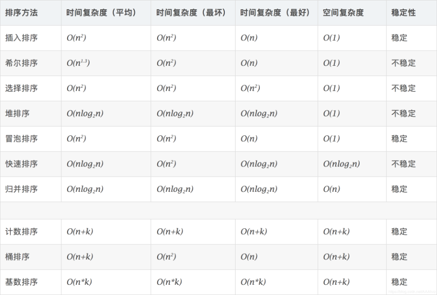

排序（sorting）是将一组数据，按特定规则调换位置，使得数据具有某种顺序关系。
排序算法的稳定性：
定义：能保证两个相等的数，经过排序之后，其在序列的前后位置顺序不变。（A1=A2，排序前A1在A2前面，排序后A1还在A2前面）
意义：稳定性本质是维持具有相同属性的数据的插入顺序，如果后面需要使用该插入顺序排序，则稳定性排序可以避免这次排序。
算法分类
- 内部排序：
- 交换排序：
- 冒泡排序
- 快速排序
- 选择排序：
- 简单选择排序
- 堆排序
- 插入排序：
- 直接插入排序
- 希尔排序
- 归并排序
- 基数排序
- 交换排序：
- 外部排序
1. 冒泡排序
冒泡排序（Bubble Sort）又称为交换排序法，每一次从当前最大的元素移动到列表的最右端，保证最右端的元素始终最大。这种排序算法适用于数据量小或有部分数据已经排序过，排序过程中为相邻两者互相比较和对调，并不会改变其原本排列的顺序，所以是稳定排序法。

code:
1 | def bubbleSort(arr): |
2. 选择排序
选择排序（Selection sort）是一种简单直观的排序算法。它的工作原理是每一次从待排序的数据元素中选出最小（或最大）的一个元素，存放在序列的起始位置。

code:
1 | def select_sort(arr): |
3. 插入排序
插入排序（Insertion-Sort）的算法描述是一种简单直观的排序算法。它的工作原理是通过构建有序序列，对于未排序数据，在已排序序列中从后向前扫描，找到相应位置并插入。

code:
1 | def insertionSort(array, step=1): |
4. 希尔排序
希尔排序（Shell Sort）是简单插入排序的改进版。它与插入排序的不同之处在于，它会优先比较距离较远的元素。希尔排序又叫缩小增量排序。
该方法的基本思想是：先将整个待排元素序列分割成若干个子序列（由相隔某个“增量”的元素组成的）分别进行直接插入排序，然后依次缩减增量再进行排序，待整个序列中的元素基本有序（增量足够小）时，再对全体元素进行一次直接插入排序。因为直接插入排序在元素基本有序的情况下（接近最好情况），效率是很高的，因此希尔排序在时间效率比直接插入排序有较大提高。

1 | def shellSort(array): |
5. 归并排序
归并排序（merge sort）， 是建立在归并操作上的一种有效的排序算法。该算法是采用分治法（Divide and Conquer）的一个非常典型的应用。归并排序是一种稳定的排序方法。将已有序的子序列合并，得到完全有序的序列；即先使每个子序列有序，再使子序列段间有序。若将两个有序表合并成一个有序表，称为2-路归并。
算法描述
- 步骤1：把长度为n的输入序列分成两个长度为n/2的子序列；
- 步骤2：对这两个子序列分别采用归并排序；
- 步骤3：将两个排序好的子序列合并成一个最终的排序序列。


1 | def mergeSort(array): |
6. 快速排序
快速排序（quick Sort）的基本思想：通过一趟排序将待排记录分隔成独立的两部分，其中一部分记录的关键字均比另一部分的关键字小，则可分别对这两部分记录继续进行排序，以达到整个序列有序。
快速排序使用分治法来把一个串（list）分为两个子串（sub-lists）。具体算法描述如下：
- 从数列中挑出一个元素，称为 “基准”（pivot）；
- 重新排序数列，所有元素比基准值小的摆放在基准前面，所有元素比基准值大的摆在基准的后面（相同的数可以到任一边）。在这个分区退出之后，该基准就处于数列的中间位置。这个称为分区（partition）操作；
- 递归地（recursive）把小于基准值元素的子数列和大于基准值元素的子数列排序。

7. 堆排序
堆排序（Heapsort）是指利用堆这种数据结构所设计的一种排序算法。堆积是一个近似完全二叉树的结构，并同时满足堆积的性质：即子结点的键值或索引总是小于（或者大于）它的父节点。
- 步骤1：将初始待排序关键字序列(R1,R2….Rn)构建成大顶堆，此堆为初始的无序区；
- 步骤2：将堆顶元素R[1]与最后一个元素R[n]交换，此时得到新的无序区(R1,R2,……Rn-1)和新的有序区(Rn),且满足R[1,2…n-1]<=R[n]；
- 步骤3：由于交换后新的堆顶R[1]可能违反堆的性质，因此需要对当前无序区(R1,R2,……Rn-1)调整为新堆，然后再次将R[1]与无序区最后一个元素交换，得到新的无序区(R1,R2….Rn-2)和新的有序区(Rn-1,Rn)。不断重复此过程直到有序区的元素个数为n-1，则整个排序过程完成。

8. 计数排序
计数排序(Counting sort) 不是基于比较的排序算法，其核心在于将输入的数据值转化为键存储在额外开辟的数组空间中。 作为一种线性时间复杂度的排序，计数排序要求输入的数据必须是有确定范围的整数。
是一种稳定的排序算法。计数排序使用一个额外的数组C，其中第i个元素是待排序数组A中值等于i的元素的个数。然后根据数组C来将A中的元素排到正确的位置。它只能对整数进行排序。
计数排序是一种适合于最大值和最小值的差值不是不是很大的排序。
基本思想：就是把数组元素作为数组的下标，然后用一个临时数组统计该元素出现的次数，例如 temp[i] = m, 表示元素 i 一共出现了 m 次。最后再把临时数组统计的数据从小到大汇总起来，此时汇总起来是数据是有序的。

9. 桶排序
桶排序就是把最大值和最小值之间的数进行瓜分，例如分成 10 个区间，10个区间对应10个桶，我们把各元素放到对应区间的桶中去，再对每个桶中的数进行排序，可以采用归并排序，也可以采用快速排序之类的。
之后每个桶里面的数据就是有序的了，我们再进行合并汇总。
10. 基数排序
基数排序是按照低位先排序，然后收集；再按照高位排序，然后再收集；依次类推，直到最高位。有时候有些属性是有优先级顺序的，先按低优先级排序，再按高优先级排序。最后的次序就是高优先级高的在前，高优先级相同的低优先级高的在前。

技术总结
